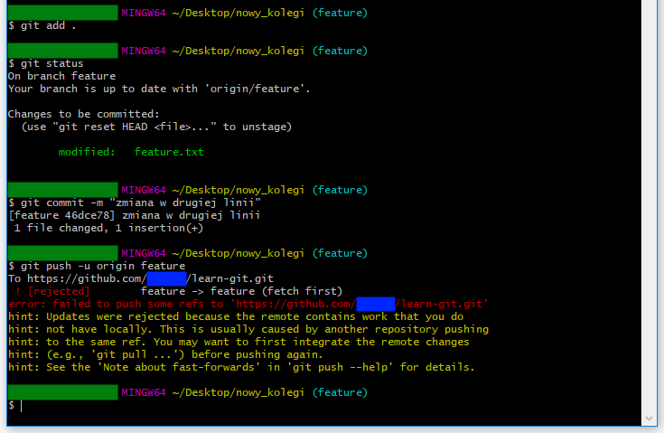

Działania nasze
- aktualizowanie lokalnej wersji
git pull
- tworzymy nową gałąź i na nią przechodzimy
git branch featuregit checkout feature
- tworyzmy nowy plik
echo >> feature.txt
- dodajemy plik do kolejki
git add .
- sprawdzamy bieżący status
git status
- tworzymy commit
git commit -m "Dodano nowy plik feature.txt"
- wgrywamy lokalne repozytorium na serwer (do odpowiedniej gałęzi)
git push -u origin featureJednorazowe polecenie, potem wystarczy tylko "git push".Opcja -u powoduje śledzenie gałęzi origin/master przez lokalną gałąź master.
# master to nazwa gałęzi lokalnej. - ...
Działania kolegi
- klonowanie wersji zdalnej przez innego użytkownika
git clone https://github.com/_nazwa_użytkownika_/learn-git.git nowy_kolegi
- inny użytkownik wchodzi do katalogu nowy_kolegi i przechodzi na gałąź feature
cd nowy_kolegigit checkout feature
- inny użytkownik zmienia plik feature.txt
- ...
Działania nasze
- zmiana pliku feature.txt przez głównego użytkownika
- dodajemy plik do kolejki
git add .
- sprawdzamy bieżący status
git status
- tworzymy commit
git commit -m "zmiana w drugiej linii"
- poprawiamy commit
git commit --amend -m "zmiana w drugiej linii w pliku feature.txt"# gdy wykonaliśmy commit za wcześnie, a jeszcze potem doszły pewne drobne zmiany.
Stara rewizja zostanie usunięta i powstanie nowa. - wgrywamy lokalne repozytorium na serwer
git push
- ...
Działania kolegi

- inny użytkownik dodaje plik do kolejki
git add .
- inny użytkownik sprawdza bieżący status
git status
- inny użytkownik tworzy commit
git commit -m "zmiana w drugiej linii"
- inny użytkownik wgrywa lokalne repozytorium na serwer
git push -u origin featuregit wykrył, że wersja repozytorium zdalnego różni się od repozytorium lokalnego kolegi
git informuje kolegę, że przyjmie zmiany gdy ten zaktualizuje swoją wersję projektu - git nie wie, która wersja jest właściwa więc pokazuje obie:
- w sekcji oznaczonej HEAD są zmiany wprowadzone przez kolegę- w sekcji oznaczonej hashem commitu są zmiany wprowadzone przez nas
- kolega decyduje, którą wersję pozostawić i usuwa niepotrzebny fragment i zatwierdza zmiany w reopzytorium
git add .git statusgit commit -m "rozwiązono konflikt dotyczący drugiej linii pliku feature.txt"git push
Działania nasze
- pobieramy zmiany
git pull
- przełączamy sie na gałąź master
git checkout master
- połączenie brancha feature z masterem
git merge feature
- usunięcie brancha feature
git branch feature -d
- wgrywamy lokalne repozytorium na serwer
git push